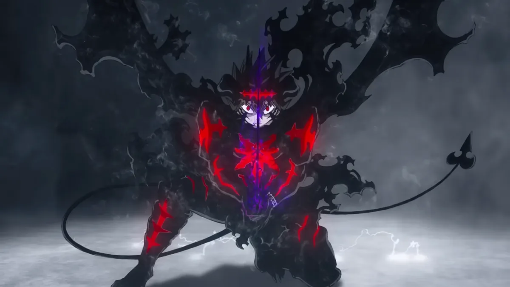
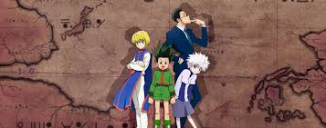
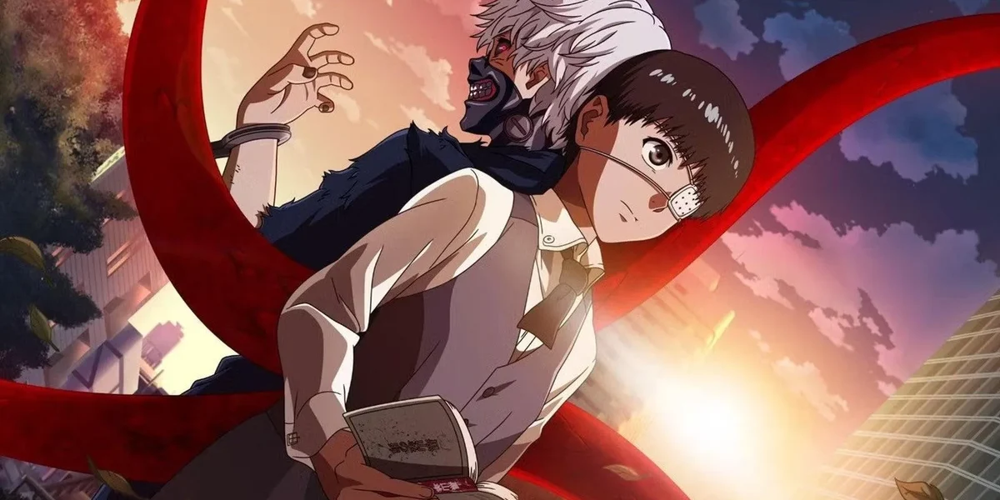
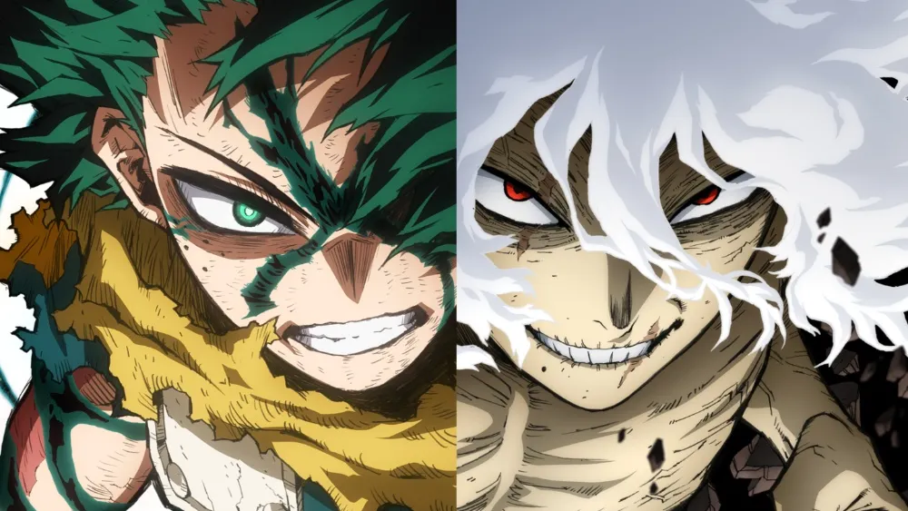
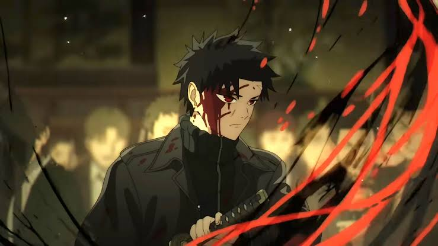

● Ongoing
Ch. 182
● Ongoing
Ch. 182
Chainsaw Man
Denji is a teenage boy living with a Chainsaw Devil named Pochita who gets recruited into Public Safety devil hunting.
 ● Completed
686 Ch.
● Completed
686 Ch.
Bleach
Ichigo Kurosaki gains the abilities of a Soul Reaper and defends Karakura Town from malevolent Hollow spirits.
Blue Lock
Three hundred high school forwards compete in a ruthless egoist soccer training project to produce Japan's best striker.

● Ongoing Ch. 372Black Clover
Born with no magical powers in a magic-governed realm, Asta wields mysterious Anti-Magic to become the Wizard King.

● Ongoing Ch. 405Hunter x Hunter
Gon Freecss embarks on a dangerous trial to earn his Hunter license, searching for the truth behind his missing father.
Vinland Saga
Raised among brutal Vikings, Thorfinn journeys through bloody battlefields seeking retribution and ultimate redemption.

● Completed 325 Ch.Tokyo Ghoul
College student Ken Kaneki survives a fatal attack by becoming half-ghoul, struggling between human and predator morality.

● Completed 430 Ch.My Hero Academia
In a world filled with superhuman Quirks, quirkless Izuku Midoriya receives One For All to become the greatest protector.
 ● Completed
271 Ch.
● Completed
271 Ch.
Jujutsu Kaisen
Yuji Itadori ingests the cursed finger of Sukuna and enters the dangerous realm of Jujutsu sorcery and curses.

● Ongoing Ch. 52Kagurabachi
Armed with his deceased father's magical katana, Chihiro embarks on a relentless war against Tokyo's criminal sorcerers.
 ● Completed
139 Ch.
● Completed
139 Ch.
Attack on Titan
Surviving inside fortified walls, humanity wages desperate combat against colossal man-eating Titans.
 ● Completed
700 Ch.
● Completed
700 Ch.
Naruto
Shunned orphan ninja Naruto Uzumaki dreams of gaining recognition and becoming the supreme ninja leader of the Leaf.